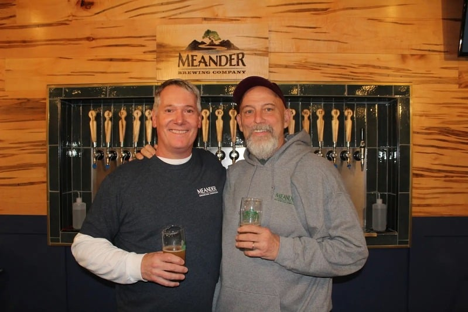
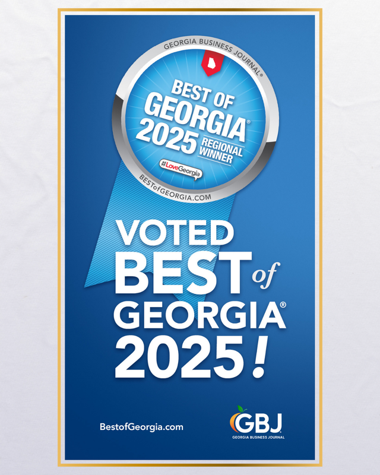

Meander Brewing Co. has been a dream of the two owners, Mike Branam and Paul Bushell, for almost two decades.
From countless awards at beer festivals to late nights in each other's home bars, the two have had a clear goal: create some of the best craft beer around. They built the recipes on kitchen scales, stress-tested them on friends, and kept the ones that earned a second pour.
When the time finally came to open the doors, Buford was the natural home. It's where their families had rooted, where the local supply chain is short enough to know every grain and every hop by name, and where a neighborhood taproom could actually mean something. Meander opened in 2024 with the same philosophy that got them there: use the freshest ingredients, respect the styles, and keep pouring what you'd want to drink.
The result is a range wide enough for the craft beer diehard and the casual light-beer drinker to sit at the same table and each be happy with what's in front of them. A pilsner and a tropical double IPA. A cream ale and a farmhouse saison. A root beer for the kids. The name says it: wander through the list.
We didn't just open a brewery in Buford. We helped open Buford to breweries.
WHY THE NAME MEANDER
Like a lot of good stories, the name came about somewhat accidentally. While rebuilding a koi pond waterfall, Mike wasn't satisfied with the way the water flowed. It traveled too directly from one point to another and to him looked too manmade not natural. So what did he do completely rip it apart and rebuilt it from scratch. When asked by family and friends why did you do it Mike’s reply was it did not Meander enough. After searching for hundreds of names while drinking a beer looking at the Koi pond Paul suggested Meander for the brewery. Mike initially suspected Paul might be giving him a little grief about the waterfall. Either way, the name stuck. And it turned out to describe exactly the kind of brewery we wanted to create. A place where you don't have to be in a hurry. Where you can wander through different beer styles instead of drinking the same thing every visit. Where conversations last a little longer than expected and take the long way around can lead to something pretty good.
WE DIDN’T JUST OPEN A BREWERY IN BUFORD. WE HELPED OPEN BUFORD TO BREWERIES.
Before Meander Brewing Company opened its doors, founders Mike Branam and Paul Bushell recognized that Buford's existing ordinances didn't provide the framework needed for the kind of local craft brewery they wanted to create. So they went to work. Paul and Mike drafted proposed legal language, met directly with City of Buford officials and advocated for changes that would allow breweries to manufacture and serve their beer in the city. They attend the city council meeting to advocate for breweries in Buford and the vote was unanimous. Those efforts helped establish the legal path that made Meander possible — and helped open the door for Buford's growing brewery community.We're proud of that history because our connection to craft brewing in Buford didn't begin when our doors opened.

Mike brings more than 30 years of homebrewing experience to Meander, along with a lifelong passion for creativity, experimentation, and figuring out how things work. His career in telecommunications, technology, and product development led to his being named as an inventor on 21 U.S. patents, reflecting the same curiosity and problem-solving mindset he brings to brewing. For Mike, creating a great beer is part science, part art, and always an opportunity to try something new. That passion eventually grew from brewing at home to building Meander Brewing Company with longtime friend Paul Bushell, where Mike continues to develop and refine recipes, explore new styles, and share his love of great beer with the community.
Paul brings a complementary background to Meander, having built his career in financial services, retirement plans, executive benefits, and relationship management. His brewing journey began more than 20 years ago when Mike introduced him to homebrewing, sparking a shared passion that eventually grew into Meander Brewing Company. Today, Paul combines his love of craft beer with his natural ability to connect with people, helping create the welcoming, community-focused brewery he and Mike always envisioned.
We utilize the wonderful local ingredients available to us to keep the beer as fresh as it can be.
We aim to be a staple of Buford. Trivia nights, fundraisers, local partnerships — we want to be more than a taproom.
Games to keep the family entertained, an outdoor beer garden for relaxing game, and the big games on the outdoor TV. Well behaved furry friends are welcome inside and out. Try out our adirondack chairs in the beer garden.
Regular fundraisers for local causes. Our patio doubles as a venue for neighbors who need a hand.

The best way to understand what we're building is to come drink a pour in person.